Unit 6 – Stochastic and Output-Feedback Linear Quadratic Control: the Kalman Filter and LQG
4SC000 Optimal Control and Reinforcement Learning
Slides · Exercises · Jupyter notebooks
1 Stochastic linear quadratic control
Unit 5 developed the linear quadratic regulator for a deterministic dynamic model. In practice, the state evolution is also affected by random disturbances, and the state itself is often only partially observed through noisy sensors. This unit removes both simplifications. It first extends the LQR to a stochastic dynamic model, still assuming full state feedback; it then tackles the general partial-information problem, culminating in the Kalman filter and the linear-quadratic- Gaussian (LQG) controller.
1.1 The stochastic DP algorithm, revisited
Consider again a general stage decision problem, now with a stochastic disturbance \(w_k \in \mathbb{R}^{n_w}\) entering the dynamics,
\[ x_{k+1} = f_k(x_k,u_k,w_k), \qquad \text{cost} = \sum_{k=0}^{h-1} g_k(x_k,u_k,w_k) + g_h(x_h), \]
where the disturbances are assumed zero-mean and statistically independent (white). The goal is to find a policy \(\pi=\{\mu_0,\dots,\mu_{h-1}\}\), \(u_k=\mu_k(x_k)\), minimizing the expected cost
\[ J_\pi(x_0) = \mathbb{E}\Big[\sum_{k=0}^{h-1} g_k(x_k,\mu_k(x_k),w_k) + g_h(x_h)\Big]. \]
As in Unit 2, this is solved by the stochastic DP algorithm: start with \(J_h(x_h)=g_h(x_h)\) for every \(x_h \in X_h\), and for \(k \in \{h-1,h-2,\dots,0\}\) compute
\[ J_k(x_k) = \min_{u_k \in U_k(x_k)} \mathbb{E}_{w_k}\big[g_k(x_k,u_k,w_k) + J_{k+1}(f_k(x_k,u_k,w_k))\big], \]
with \(\mu_k(x_k)\) a minimizer. It is worth spelling out that this expectation is conditional on \(x_k\),
\[ \mathbb{E}_{w_k}\big[g_k(x_k,u_k,w_k)+J_{k+1}(f_k(x_k,u_k,w_k))\,\big|\,x_k\big], \]
which makes explicit that \(x_k\) is held fixed while averaging over \(w_k\) and minimizing over \(u_k\).
1.2 Linear quadratic control with stochastic disturbances
Specialize now to a linear model with additive disturbance,
\[ x_{k+1}=A_kx_k+B_ku_k+w_k, \qquad k\in\{0,\dots,h-1\}, \qquad \mathbb{E}[w_k]=0 \text{ and white}, \]
and the same quadratic cost as in Unit 5,
\[ \mathbb{E}\Big[\sum_{k=0}^{h-1} \begin{bmatrix}x_k^\intercal & u_k^\intercal\end{bmatrix}\begin{bmatrix}Q_k & S_k \\ S_k^\intercal & R_k\end{bmatrix}\begin{bmatrix}x_k \\ u_k\end{bmatrix} + x_h^\intercal Q_h x_h\Big]. \]
Theorem. The optimal policy for this stochastic linear quadratic control problem is
\[ u_k = K_kx_k, \qquad k \in \{0,\dots,h-1\}, \]
with \(K_k\) and \(P_k\) given by exactly the same Riccati iterations as in the deterministic case,
\[ K_k = -\big(B_k^\intercal P_{k+1}B_k+R_k\big)^{-1}\big(S_k^\intercal+B_k^\intercal P_{k+1}A_k\big), \]
\[ P_k = A_k^\intercal P_{k+1}A_k+Q_k - \big(S_k+A_k^\intercal P_{k+1}B_k\big)\big(B_k^\intercal P_{k+1}B_k+R_k\big)^{-1}\big(S_k^\intercal+B_k^\intercal P_{k+1}A_k\big), \qquad P_h=Q_h, \]
and the resulting expected cost is
\[ J_0(x_0) = x_0^\intercal P_0 x_0 + \sum_{k=0}^{h-1} \text{trace}\big(P_{k+1}\mathbb{E}[w_kw_k^\intercal]\big). \]
We show by induction that the cost-to-go at every stage \(k\) has the form
\[ J_k(x_k) = x_k^\intercal P_kx_k+c_k, \qquad c_k = \sum_{\ell=k}^{h-1} \text{trace}(P_{\ell+1}\mathbb{E}[w_\ell w_\ell^\intercal]), \]
with \(P_k\) given by the (deterministic) Riccati recursion of Unit 5. This holds for \(k=h\), since \(J_h(x_h)=x_h^\intercal Q_hx_h\), i.e. \(c_h=0\). Assume it holds for \(k+1\), i.e. \(J_{k+1}(x_{k+1}) = x_{k+1}^\intercal P_{k+1}x_{k+1}+c_{k+1}\). Then, at step \(k\),
\[ J_k(x_k) = \min_{u_k} \mathbb{E}_{w_k}\big[x_k^\intercal Q_kx_k+u_k^\intercal R_ku_k+2x_k^\intercal S_ku_k+x_{k+1}^\intercal P_{k+1}x_{k+1}+c_{k+1}\,|\,x_k\big]. \]
Substituting \(x_{k+1}=A_kx_k+B_ku_k+w_k\) and expanding \(x_{k+1}^\intercal P_{k+1}x_{k+1}\), three new terms appear relative to the deterministic case, involving \(w_k^\intercal P_{k+1}(A_kx_k+B_ku_k)\), its transpose, and \(w_k^\intercal P_{k+1}w_k\). The cross terms vanish in expectation, since
\[ \mathbb{E}_{w_k}\big[w_k^\intercal P_{k+1}(A_kx_k+B_ku_k)\big] = \underbrace{\mathbb{E}_{w_k}[w_k]}_{=0}^\intercal P_{k+1}(A_kx_k+B_ku_k) = 0, \]
while the quadratic term contributes a constant (independent of \(u_k\)),
\[ \mathbb{E}[w_k^\intercal P_{k+1}w_k] = \mathbb{E}[\text{trace}(w_k^\intercal P_{k+1}w_k)] = \text{trace}(P_{k+1}\mathbb{E}[w_kw_k^\intercal]). \]
What remains to be minimized over \(u_k\) is exactly the same quadratic expression as in the deterministic derivation of Unit 5,
\[ \min_{u_k}\big[x_k^\intercal Q_kx_k+u_k^\intercal R_ku_k+2x_k^\intercal S_ku_k+(A_kx_k+B_ku_k)^\intercal P_{k+1}(A_kx_k+B_ku_k)\big], \]
which gives the same minimizer \(u_k=K_kx_k\) and the same value \(x_k^\intercal P_kx_k\). Hence, the optimal policy for the stochastic problem coincides with the deterministic one, and
\[ J_k(x_k) = x_k^\intercal P_kx_k + \underbrace{c_{k+1}+\text{trace}(P_{k+1}\mathbb{E}[w_kw_k^\intercal])}_{c_k}, \]
which completes the induction. At \(k=0\) this gives \(J_0(x_0)=x_0^\intercal P_0x_0+c_0\), i.e. the expression stated above.
1.3 Certainty equivalence
This theorem has a remarkable consequence: the optimal policy is exactly the same as in the noise-free case \(w_k=0\). Recall the three ways of coping with stochastic disturbances discussed earlier in the course – open loop (execute the decisions of the optimal path computed ignoring future disturbances), closed loop via deterministic DP (recompute the policy pretending disturbances are zero), and closed loop via stochastic DP (properly average over disturbances). The result above says that when the dynamic model is linear and the cost is quadratic, all three approaches coincide. This phenomenon is called certainty equivalence. The cost, of course, does still increase in the presence of disturbances:
\[ J_0(x_0) = \underbrace{x_0^\intercal P_0 x_0}_{\text{cost without disturbances}} + \underbrace{\sum_{k=0}^{h-1}\text{trace}(P_{k+1}\mathbb{E}[w_kw_k^\intercal])}_{\text{additional cost}}. \]
The result carries over to the infinite-horizon cost
\[ \mathbb{E}\Big[\sum_{k=0}^\infty x_k^\intercal Qx_k+2x_k^\intercal Su_k+u_k^\intercal Ru_k\Big], \]
with optimal policy \(u_k=\bar Kx_k\), \(\bar K=-(B^\intercal \bar PB+R)^{-1}(S^\intercal+B^\intercal \bar PA)\), where \(\bar P\) solves the algebraic Riccati equation of Unit 5 – under the same assumptions used there. The extra ingredient needed here is that the cost be bounded, e.g. because the disturbance sequence is eventually zero (\(w_\ell=0\) for \(\ell>L\) for some \(L>0\)); in that case the cost is
\[ x_0^\intercal \bar P x_0 + \sum_{k=0}^\infty \text{trace}(\bar P \mathbb{E}[w_kw_k^\intercal]). \]
If the cost is not bounded (e.g. persistent disturbances), one instead considers the average cost
\[ \lim_{T\to\infty} \frac{1}{T}\mathbb{E}\Big[\sum_{k=0}^{T-1} x_k^\intercal Qx_k+2x_k^\intercal Su_k+u_k^\intercal Ru_k\Big], \]
which, assuming \(W=\mathbb{E}[w_kw_k^\intercal]\) is the same for every \(k\), converges to \(\text{trace}(\bar P W)\).
1.4 Example: the double integrator with a random disturbance
Return to the double integrator of Unit 5,
\[ x_{k+1} = \begin{bmatrix}1&\tau\\0&1\end{bmatrix}x_k + \begin{bmatrix}\frac{\tau^2}{2}\\\tau\end{bmatrix}u_k, \qquad \tau=0.2, \]
with cost \(\sum_{k=0}^{h-1}(x_k^\intercal Qx_k+u_k^\intercal Ru_k)+x_h^\intercal Q_hx_h\), \(Q=I\), \(R=1\). As the horizon grows, the optimal policy converges to the static gain \(u_k=Kx_k\), \(k\geq 0\), with \(K=[-0.8412\ \ -1.54]\). The plot below shows the resulting control input and states for \(x_0=[y_0\ \ v_0]^\intercal=[1\ \ 0]^\intercal\), with no disturbance.
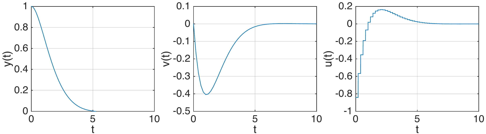
Now introduce a single disturbance at \(k=10\) (i.e. \(t=2\) s):
\[ x_{k+1} = \begin{bmatrix}1&\tau\\0&1\end{bmatrix}x_k + \begin{bmatrix}\frac{\tau^2}{2}\\\tau\end{bmatrix}u_k+w_k, \qquad w_k = \begin{cases}\begin{bmatrix}0\\0\end{bmatrix}, & k\in\mathbb{N}_0\setminus\{10\} \\ \begin{bmatrix}0\\a\end{bmatrix}, & k=10,\end{cases} \]
where \(a\) is uniform on \([-0.5,\ 0.5]\). The figure below contrasts an open-loop strategy, which simply executes the pre-computed disturbance- free control sequence, with the closed-loop strategy \(u_k=Kx_k\).
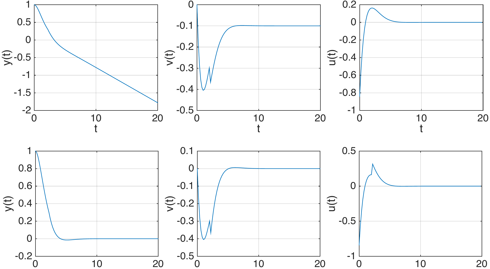
For the closed-loop (infinite-horizon) policy, the expected cost can be computed directly from the formula above,
\[ x_0^\intercal \bar P x_0+\sum_{k=0}^\infty \text{trace}\big(\bar P\,\mathbb{E}[w_kw_k^\intercal]\big) = x_0^\intercal \bar P x_0+\text{trace}\Big(\bar P\begin{bmatrix}0&0\\0&\mathbb{E}[a^2]\end{bmatrix}\Big), \]
where \(\bar P\) solves the algebraic Riccati equation for this system,
\[ \bar P = \begin{bmatrix}9.1890 & 5.0249\\5.0249 & 9.2324\end{bmatrix}. \]
Taking \(x_0=[0\ \ 1]^\intercal\) (i.e. considering the cost contributed by the disturbance alone) and \(\mathbb{E}[a^2]=\int_{-0.5}^{0.5} t^2\,dt = 1/12\), this evaluates to a cost of \(9.95\). This can be checked against a Monte Carlo simulation: the figure below shows two individual sample runs (with their own realized cost), out of 5000 simulated trajectories, whose average cost matches the analytical prediction almost exactly.
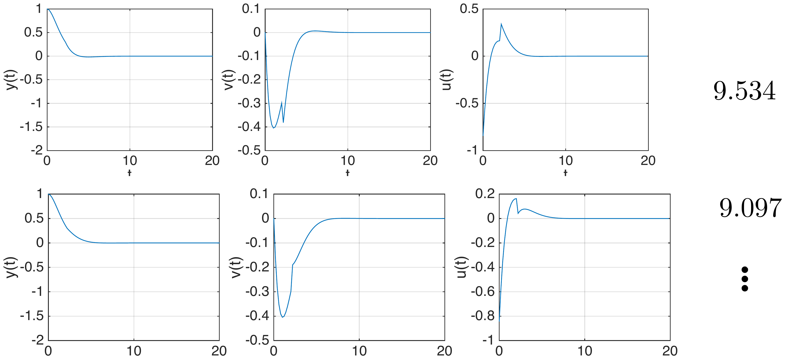
The panel below reproduces the example above and lets you change the two things the analysis says should matter: when the disturbances occur and how large they are, through their covariance \(W=\mathbb{E}[w_kw_k^\intercal]\). Everything else is as above: \(\tau=0.2\), \(Q=I\), \(R=1\), \(x_0=[1\ \ 0]^\intercal\), and the stationary optimal gain \(\bar K=[-0.8412\ \ -1.5460]\) obtained from \(\bar P=\begin{bmatrix}9.1890&5.0249\\5.0249&9.2324\end{bmatrix}\).
The grey curves are 25 closed-loop sample paths, the blue curve is one highlighted realization, and the red dashed curve is the open-loop strategy on that same realization: it replays the control sequence computed for the disturbance-free problem and therefore never reacts to \(w_k\). Costs are reported over the infinite horizon, by charging the tail beyond the plotted window at its exact value \(x_h^\intercal\bar Px_h\).
Three things are worth checking:
- Move the single disturbance from \(k=10\) to \(k=3\) or \(k=30\). The trajectories change completely, but the expected cost does not: the term \(\text{trace}(\bar PW)\) carries no \(k\) in it. Each extra disturbance instant adds exactly the same amount.
- Scale \(W_{22}\) up and down. The cost is affine in \(W\), so doubling the covariance doubles the disturbance’s contribution — it does not depend on the shape of the distribution, only on its second moment: switching between the uniform and the Gaussian noise leaves the expected cost unchanged.
- Push the disturbance into the position channel (\(W_{11}>0\)) and compare \(\text{trace}(\bar PW)\) with the velocity case. Which channel is more expensive to be kicked in, and why does \(\bar P\) tell you so before you simulate anything?
The open-loop average, shown for comparison, grows without bound as the window is lengthened: certainty equivalence tells us the optimal policy is the same \(u_k=\bar Kx_k\) as in the deterministic problem, but it must be applied as a feedback law, not as a precomputed sequence.
2 Output-feedback linear quadratic control
So far we have assumed the controller has access to the full state \(x_k\). We now turn to the general partial-information setting already introduced in Unit 4 for discrete problems: the state is driven by disturbances and only an output \(y_k\), corrupted by noise, is available.
2.1 Problem formulation
The dynamic model, cost, and output equation are
\[ x_{k+1}=f_k(x_k,u_k,w_k), \qquad \sum_{k=0}^{h-1} g_k(x_k,u_k,w_k)+g_h(x_h), \qquad y_k=h_k(x_k,u_{k-1},n_k), \]
with information set
\[ I_0=(y_0), \qquad I_k=(y_0,y_1,\dots,y_k,u_0,u_1,\dots,u_{k-1}), \quad k\geq 1. \]
The goal is to find a policy \(\pi=\{\mu_0,\dots,\mu_{h-1}\}\), \(u_k=\mu_k(I_k)\), minimizing \(J_\pi = \mathbb{E}\big[\sum_{k=0}^{h-1} g_k(x_k,\mu_k(I_k),w_k) + g_h(x_h)\big]\), where the initial state, disturbances and output noise are all zero mean, statistically independent, and have known probability distributions.
First approach: the information set as the state. As in Unit 4, one can reformulate this as a standard full-information problem by treating the entire information set \(I_k\) as the state at stage \(k\). The problem is that the dimension of \(I_k\) – and hence of the corresponding measurement/information space – grows with \(k\), as illustrated below.
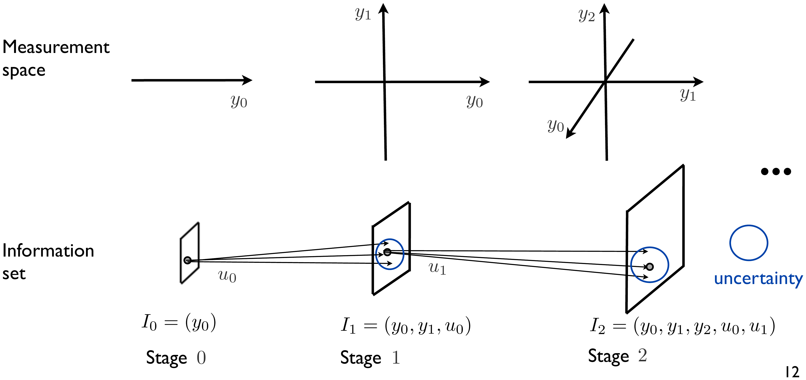
Second approach: the belief state. As in Unit 4, it is possible to show that the conditional probability distribution of the state given the information so far, \(P_{x_k|I_k}\), is sufficient to determine optimal decisions, \(u_k=\mu_k(P_{x_k|I_k})\). Unlike \(I_k\) itself, this distribution lives in a fixed-dimensional space, though in general it can still be hard to represent or store.
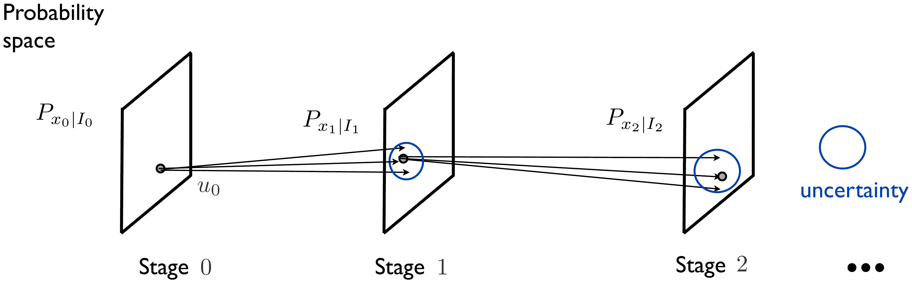
2.2 The Gaussian, linear-quadratic case
To make this tractable we specialize, as in the deterministic case, to a linear model and a quadratic cost, now with a linear, noisy output:
\[ x_{k+1}=Ax_k+Bu_k+w_k, \qquad \sum_{k=0}^{h-1}\begin{bmatrix}x_k^\intercal & u_k^\intercal\end{bmatrix}\begin{bmatrix}Q&S\\S^\intercal&R\end{bmatrix}\begin{bmatrix}x_k\\u_k\end{bmatrix}+x_h^\intercal Q_hx_h, \qquad y_k=Cx_k+n_k, \]
with information set \(I_k=(y_0,\dots,y_k,u_0,\dots,u_{k-1})\), and the goal is again a policy \(u_k=\mu_k(I_k)\) minimizing the expected cost. Crucially, we now also assume every random quantity is Gaussian: the initial state \(x_0 \sim \mathcal{N}(\bar x_0,\bar\Phi_0)\), with \(\bar\Phi_0=\mathbb{E}[(x_0-\bar x_0)(x_0-\bar x_0)^\intercal]\) its covariance and density
\[ f(x) = \frac{1}{\sqrt{(2\pi)^k\det(\Sigma)}}e^{-\frac{1}{2}(x-\bar x_0)^\intercal \bar\Phi_0^{-1}(x-\bar x_0)}, \qquad \text{Prob}[x_0\in A] = \int_A f(x)\,dx, \]
illustrated below for \(\bar x_0=[1\ \ 2]^\intercal\), \(\bar\Phi_0=\begin{bmatrix}2&0.5\\0.5&2\end{bmatrix}\); the output noise \(n_k\sim\mathcal{N}(0,V)\) and the disturbance \(w_k\sim\mathcal{N}(0,W)\) are independent across time. For simplicity, the model and cost matrices are taken time-invariant.
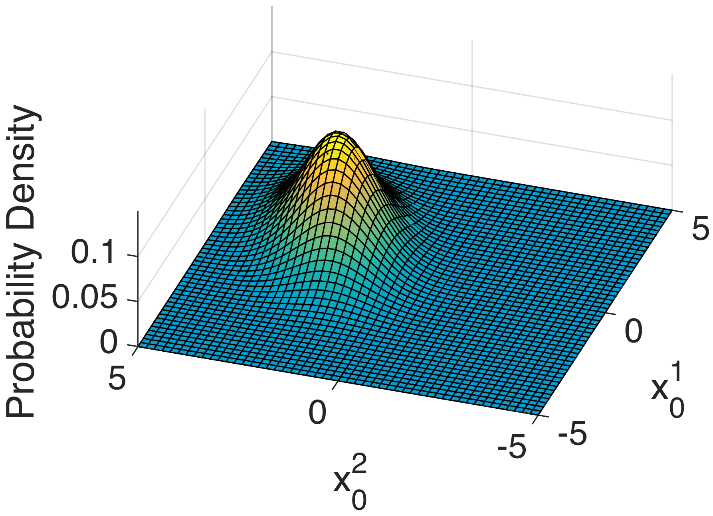
Before using Gaussians to describe beliefs, it is worth getting a feel for what the mean and the covariance actually do to the density. Pick the one-dimensional case to see \(f(x)\) for a scalar \(x\sim\mathcal{N}(\mu,\sigma^2)\), or the two-dimensional case to see the bell-shaped surface of the figure above together with its contour plot, for \(x\sim\mathcal{N}(\bar x_0,\bar\Phi_0)\) with \(\bar\Phi_0=\begin{bmatrix}\Sigma_{11}&\Sigma_{12}\\\Sigma_{12}&\Sigma_{22}\end{bmatrix}\). The panel starts at the values of Fig. 6.
In the two-dimensional view the red curves are the level sets of the exponent, i.e. the ellipses \((x-\bar x_0)^\intercal\bar\Phi_0^{-1}(x-\bar x_0)=k^2\) for \(k=1,2,3\); the dashed green segments are the principal axes of \(\bar\Phi_0\), with lengths given by the square roots of its eigenvalues.
Things to try:
- Change the mean. Nothing about the shape changes, the whole density just translates: the mean says where, the covariance says how uncertain.
- In the 1D view, increase \(\sigma^2\). The curve widens and, since the area under it must stay \(1\), its peak drops as \(1/\sigma\). The mass inside \(\mu\pm\sigma\), \(\mu\pm2\sigma\) and \(\mu\pm3\sigma\) is reported below the plot and never moves from \(68\%\), \(95\%\), \(99.7\%\) — the familiar reason why a covariance is such a compact summary of uncertainty.
- In the 2D view, set \(\Sigma_{12}=0\) and make \(\Sigma_{11}\neq\Sigma_{22}\): the ellipses are axis-aligned and the two components are independent. Now raise \(\Sigma_{12}\) towards \(\sqrt{\Sigma_{11}\Sigma_{22}}\). The ellipses tilt and collapse onto a line, the smaller eigenvalue goes to zero and the peak density blows up: knowing \(x^1\) then tells you almost exactly what \(x^2\) is. Note that the marginals printed below the plot do not change at all while you do this — correlation is information the individual components cannot see, and exploiting it is precisely what the estimator of the next sections does.
- Switch the sample cloud on. These are the realizations a Monte Carlo simulation would produce; roughly \(39\%\) of them fall inside the innermost ellipse in 2D, not \(68\%\) as in 1D.
2.3 The separation principle
Combining the belief-state idea with the Gaussian assumption gives the general solution structure: first estimate \(P_{x_k|I_k}\), then decide.
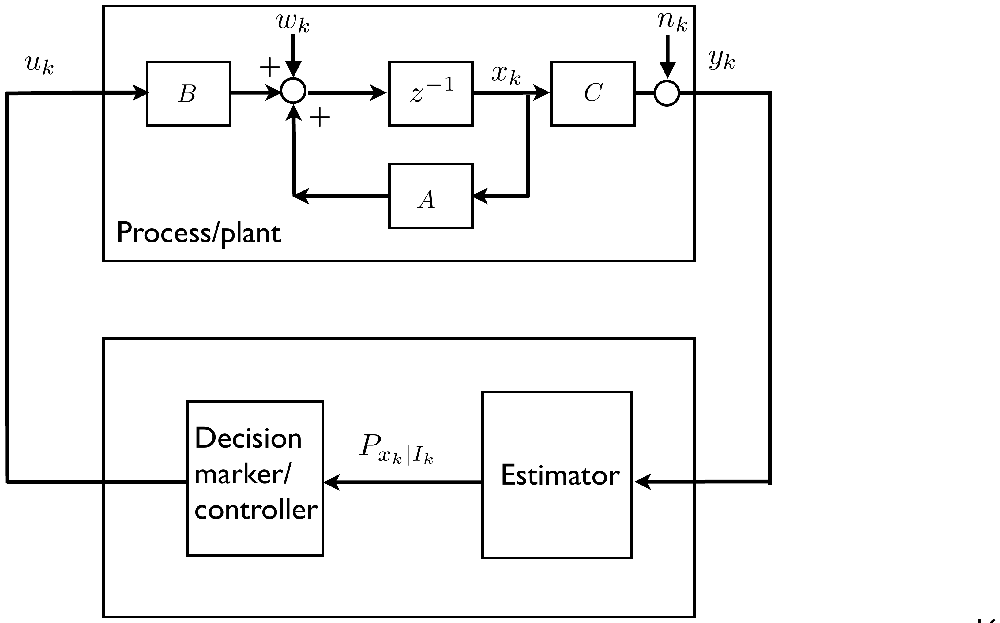
It turns out (see the derivation folded in below) that
- \(P_{x_k|I_k}\) is Gaussian, characterized entirely by its mean \(\hat x_{k|k}\) and covariance \(\Phi_{k|k}=\mathbb{E}[(x_k-\hat x_{k|k})(x_k-\hat x_{k|k})^\intercal|I_k]\), which can be computed recursively by the Kalman filter;
- the decision-maker is simply the linear quadratic controller of Unit 5 with the true state replaced by its estimate, \(u_k=K_k\hat x_{k|k}\), using the same Riccati gains \(K_k\).
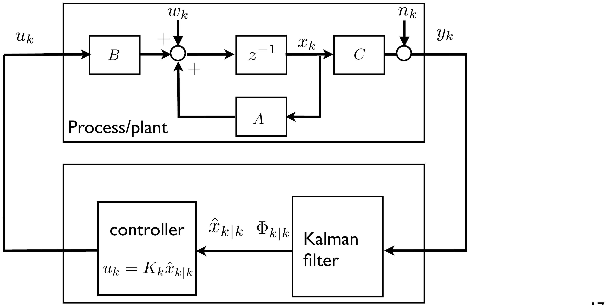
This is one of the most beautiful and useful results in control theory. The resulting controller is called the linear quadratic Gaussian (LQG) compensator, and the fact that it decomposes into an independently designed estimator and controller is the separation principle:
\[ \text{LQG} = \text{LQR} + \text{LQE}, \]
where LQE (linear quadratic estimator) is another name for the Kalman filter. As we have seen, the LQR is the optimal controller under full state feedback. Dually, for a linear system with the model above and known input, the Kalman filter is the optimal estimator in the sense that, for any linear function \(z_k=Fx_k\) of the state, the estimate \(\hat z_k=F\hat x_{k|k}\) minimizes, for every \(k\), the mean squared error \(\mathbb{E}[(z_k-\hat z_k)^2|I_k]\). In fact, when the noise, disturbances and initial condition are Gaussian, the LQG controller is optimal among all controllers, linear or not (non-Gaussian noise is discussed further below). The resulting optimal cost (derived in the callout below) is
\[ J_0(I_0) = \underbrace{\mathbb{E}[x_0^\intercal P_0x_0|I_0]}_{\text{full state \& no disturbances}} + \underbrace{\sum_{k=0}^{h-1}\text{trace}(P_{k+1}\mathbb{E}[w_kw_k^\intercal])}_{\text{additional cost of disturbances}} + \underbrace{\sum_{k=0}^{h-1}\text{trace}(X_k\mathbb{E}[(x_k-\hat x_{k|k})(x_k-\hat x_{k|k})^\intercal|I_k])}_{\text{additional cost of partial information}}, \]
with \(X_k=A^\intercal P_{k+1}B(R+B^\intercal P_{k+1}B)^{-1}B^\intercal P_{k+1}A\): the total cost is the deterministic full-state cost, plus a term due to the disturbances (as in the full-state stochastic case), plus a further term due to only partially observing the state.
View \(I_k\) as the state of the underlying full-information problem, so the cost-to-go is
\[ J_\ell(I_\ell) = \mathbb{E}\Big[\sum_{k=\ell}^{h-1} x_k^\intercal Qx_k+u_k^\intercal Ru_k+x_h^\intercal Q_hx_h\,\Big|\,I_\ell\Big], \qquad u_k=\mu_k(I_k) \text{ optimal}. \]
We prove by induction that
\[ J_\ell(I_\ell) = \mathbb{E}[x_\ell^\intercal P_\ell x_\ell|I_\ell]+a_\ell, \qquad a_\ell = \sum_{k=\ell}^{h-1}\text{trace}(P_{k+1}W)+\sum_{k=\ell}^{h-1}\text{trace}(X_k\Phi_k), \]
which holds at \(\ell=h\) with \(a_h=0\). Assume it holds at \(\ell+1\). From the stochastic DP algorithm,
\[ J_\ell(I_\ell) = \min_{u_\ell=\mu_\ell(I_\ell)} \mathbb{E}\big[x_\ell^\intercal Qx_\ell+u_\ell^\intercal Ru_\ell+\mathbb{E}[x_{\ell+1}^\intercal P_{\ell+1}x_{\ell+1}|I_{\ell+1}]+a_{\ell+1}\,\big|\,I_{\ell+1}\big], \]
and, by the tower property of conditional expectation, \(\mathbb{E}[\mathbb{E}[x_{\ell+1}^\intercal P_{\ell+1}x_{\ell+1}|I_{\ell+1}]|I_\ell]=\mathbb{E}[x_{\ell+1}^\intercal P_{\ell+1}x_{\ell+1}|I_\ell]\), so
\[ J_\ell(I_\ell) = \min_{u_\ell=\mu_\ell(I_\ell)} \mathbb{E}\big[x_\ell^\intercal Qx_\ell+u_\ell^\intercal Ru_\ell+x_{\ell+1}^\intercal P_{\ell+1}x_{\ell+1}\,\big|\,I_\ell\big]+a_{\ell+1}. \]
Substituting \(x_{\ell+1}=Ax_\ell+Bu_\ell+w_\ell\) (with \(w_\ell\) independent of \(I_\ell\), as in the full-state derivation) gives
\[ \mathbb{E}\big[x_\ell^\intercal(A^\intercal P_{\ell+1}A+Q)x_\ell+u_\ell^\intercal(R+B^\intercal P_{\ell+1}B)u_\ell+2u_\ell^\intercal B^\intercal P_{\ell+1}Ax_\ell\,|\,I_\ell\big] + \text{trace}\big(P_{\ell+1}\,\mathbb{E}[w_\ell w_\ell^\intercal|I_\ell]\big), \]
with \(\mathbb{E}[w_\ell w_\ell^\intercal|I_\ell]=W\). Since \(u_\ell\) is constant given \(I_\ell\), minimizing over \(u_\ell\) reduces to
\[ \min_{u_\ell} u_\ell^\intercal(R+B^\intercal P_{\ell+1}B)u_\ell+2u_\ell^\intercal B^\intercal P_{\ell+1}A\,\mathbb{E}[x_\ell|I_\ell], \]
with minimizer \(u_\ell = -(R+B^\intercal P_{\ell+1}B)^{-1}B^\intercal P_{\ell+1}A\,\mathbb{E}[x_\ell|I_\ell]\). Substituting back, and using \(\mathbb{E}[x_\ell|I_\ell]=x_\ell+(\mathbb{E}[x_\ell|I_\ell]-x_\ell)\) together with the fact that \(\mathbb{E}[x_\ell^\intercal Y(\mathbb{E}[x_\ell|I_\ell]-x_\ell)|I_\ell]=0\) for any matrix \(Y\) (the estimation error is uncorrelated, given \(I_\ell\), with the estimate itself), gives
\[ J_\ell(I_\ell) = \mathbb{E}\Big[x_\ell^\intercal\underbrace{(A^\intercal P_{\ell+1}A+Q-X_\ell)}_{P_\ell}x_\ell\,\Big|\,I_\ell\Big] + \underbrace{\text{trace}\Big(X_\ell\mathbb{E}\big[(x_\ell-\mathbb{E}[x_\ell|I_\ell])(x_\ell-\mathbb{E}[x_\ell|I_\ell])^\intercal\big]\Big)+a_{\ell+1}+\text{trace}(P_{\ell+1}W)}_{a_\ell}, \]
completing the induction. The optimal policy is \(u_\ell=-(R+B^\intercal P_{\ell+1}B)^{-1}B^\intercal P_{\ell+1}A\,\mathbb{E}[x_\ell|I_\ell]=K_\ell\hat x_{\ell|\ell}\), and setting \(\ell=0\) in the induction formula gives the stated expression for \(J_0(I_0)\).
The separation principle also holds for the infinite-horizon average cost
\[ \lim_{T\to\infty}\frac{1}{T}\sum_{k=0}^{T-1}\mathbb{E}\Big[\begin{bmatrix}x_k^\intercal & u_k^\intercal\end{bmatrix}\begin{bmatrix}Q&S\\S^\intercal&R\end{bmatrix}\begin{bmatrix}x_k\\u_k\end{bmatrix}\Big], \]
in which case the estimator becomes the stationary Kalman filter (constant gain) and the controller becomes the static-gain LQR of Unit 5.
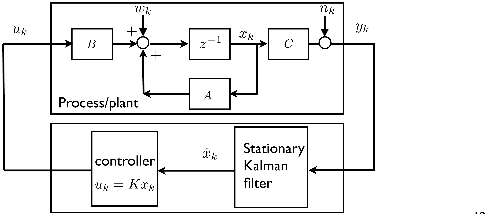
3 The Kalman filter
Having established that the belief \(P_{x_k|I_k}\) is Gaussian and sufficient for optimal decisions, we now give the filter that computes its mean and covariance recursively.
Given: dynamic model \(x_{k+1}=Ax_k+Bu_k+w_k\), \(x_0\sim\mathcal{N}(\bar x_0,\bar\Phi_0)\); output equation \(y_k=Cx_k+n_k\), \(n_k\sim\mathcal{N}(0,V)\), \(w_k\sim\mathcal{N}(0,W)\); information set \(I_k=(y_0,\dots,y_k,u_0,\dots,u_{k-1})\), \(k\geq 0\).
Then: \(P_{x_k|I_k}\sim\mathcal{N}(\hat x_{k|k},\Phi_{k|k})\) is Gaussian, with mean and covariance computed iteratively by
\[ \hat x_{k|k} = \hat x_{k|k-1}+L_k(y_k-C\hat x_{k|k-1}), \qquad \hat x_{k+1|k}=A\hat x_{k|k}+Bu_k, \]
\[ \Phi_{k|k} = \Phi_{k|k-1}-\Phi_{k|k-1}C^\intercal(C\Phi_{k|k-1}C^\intercal+V)^{-1}C\Phi_{k|k-1}, \qquad \Phi_{k+1|k}=A\Phi_{k|k}A^\intercal+W, \]
\[ L_k = \Phi_{k|k-1}C^\intercal(C\Phi_{k|k-1}C^\intercal+V)^{-1}, \]
with initial condition \(\hat x_{0|-1}=\bar x_0\), \(\Phi_{0|-1}=\bar\Phi_0\). This is the Kalman filter – a special case of the Bayes’ filter of Unit 4, specialized to Gaussian distributions, for which the update rule collapses to simple linear-algebraic recursions on the mean and covariance.
3.1 Why is the belief Gaussian? Bayes’ rule
The general argument (given in full below) is an induction on Bayes’ rule; here is the idea for the very first stage. Let \(x_0\in\mathbb{R}\) be a scalar, \(y_0=x_0+n_0\), with a priori densities
\[ f_{x_0}(x_0) = \frac{1}{\sqrt{2\pi}\sigma_0}e^{-\frac{(x_0-\bar x_0)^2}{2\sigma_0^2}}, \qquad f_{y_0|x_0}(y_0) = \frac{1}{\sqrt{2\pi}\sigma_n}e^{-\frac{(y_0-x_0)^2}{2\sigma_n^2}}. \]
Think of \(x_0\) as the position of a robot and \(y_0\) as a noisy position sensor reading.
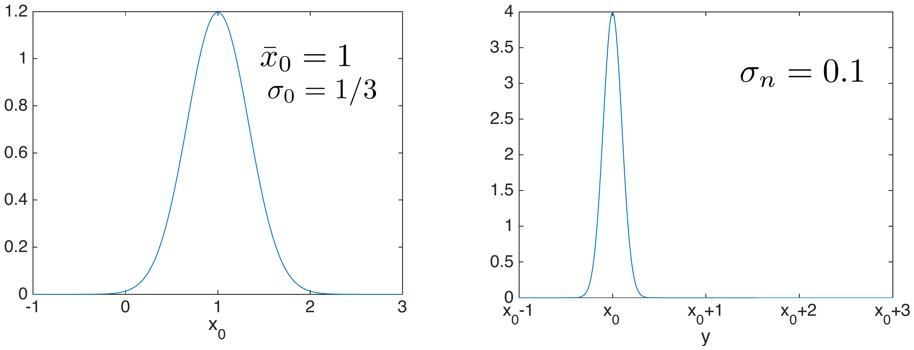
By Bayes’ rule, \(\text{Prob}[x_0\in A|y_0\in B] = \alpha\,\text{Prob}[y_0\in B|x_0\in A]\,\text{Prob}[x_0\in A]\), or in terms of densities, \(f_{x_0|y_0}(x_0) = \alpha f_{y_0|x_0}(y_0)f_{x_0}(x_0)\), with \(\alpha\) a normalizing constant (a function of \(\bar x_0,y_0\)). Substituting the two Gaussian densities and simplifying,
\[ f_{x_0|y_0}(x_0) = \alpha\frac{1}{\sqrt{2\pi}\sigma_n}e^{-\frac{(y_0-x_0)^2}{2\sigma_n^2}}\frac{1}{\sqrt{2\pi}\sigma_0}e^{-\frac{(x_0-\bar x_0)^2}{2\sigma_0^2}} = \frac{1}{\sqrt{2\pi}\sigma_{0|0}}e^{-\frac{(x_0-\hat x_{0|0})^2}{2\sigma_{0|0}^2}}, \]
which is again Gaussian – a special algebraic feature of multiplying two Gaussian densities together – with
\[ \hat x_{0|0} = \bar x_0+L_0(y_0-\bar x_0), \qquad \sigma_{0|0}^2 = \sigma_0^2-\frac{\sigma_0^4}{\sigma_0^2+\sigma_n^2}, \qquad L_0=\frac{\sigma_0^2}{\sigma_0^2+\sigma_n^2}. \]
These are exactly the scalar case of the Kalman filter’s correction equations. The figure below shows the prior \(P_{x_0}\), the sensor model \(P_{y_0|x_0}\), and how the posterior belief \(P_{x_0|I_0}\) shifts and sharpens for three different example measurements.
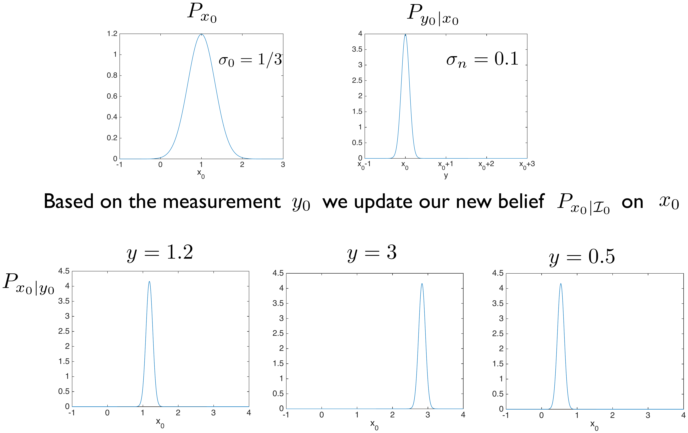
What about \(P_{x_1|I_1}\)? Since \(x_1=ax_0+bu_0+w\) is (conditioned on \(u_0,y_0\)) a sum of Gaussian random variables, \(P_{x_1|u_0,y_0}\) is Gaussian; applying Bayes’ rule once more, as above, shows \(P_{x_1|I_1}\) is Gaussian too. Continuing this argument shows \(P_{x_k|I_k}\) is Gaussian for every \(k\): the Kalman filter is the special case of the Bayes’ filter in which every belief distribution stays Gaussian, so it can be propagated recursively using only its mean and covariance.
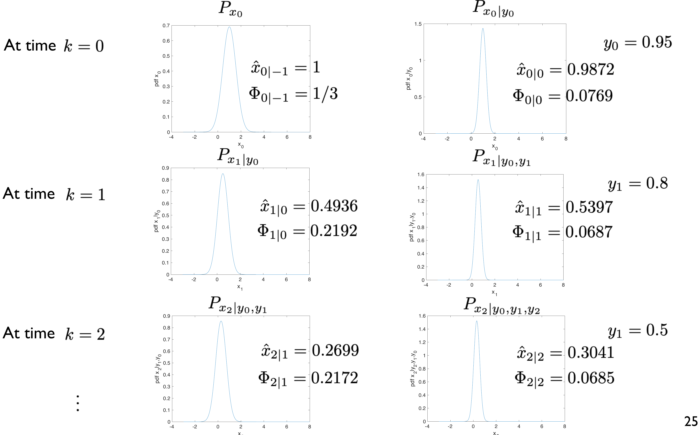
This is the scalar example above, run for many stages instead of one. The state is \(x_{k+1}=ax_k+u+w_k\) with \(w_k\sim\mathcal{N}(0,\sigma_w^2)\), the sensor is \(y_k=x_k+n_k\) with \(n_k\sim\mathcal{N}(0,\sigma_n^2)\), and the prior is \(x_0\sim\mathcal{N}(\bar x_0,\sigma_0^2)\) with \(\bar x_0=1\). With \(a=1\) and no input this is a robot drifting along a line, measured by a noisy position sensor.
The top plot holds the three densities of the Bayes’ rule computation at the current stage: the prediction \(P_{x_k|I_{k-1}}\) in green, the sensor model \(f_{y_k|x_k}\) evaluated at the measurement actually received (in orange, a function of \(x\) with width \(\sigma_n\)), and their normalized product, the posterior \(P_{x_k|I_k}\), in red. The blue tick is the true state, which the filter never sees. Each Play tick advances half a stage, so you see the prediction alone first and then the correction, the alternation of Fig. 12. The bottom strip is the history: the belief of every stage so far as a column of colour, dark where the density is high, with the true trajectory in blue and the measurements as orange dots.
Worth trying:
- Step through stage \(0\) with the default values. The prior has \(\sigma_0=1/3\) and the sensor \(\sigma_n=0.1\), so \(L_0=\sigma_0^2/(\sigma_0^2+\sigma_n^2)=0.9174\): the posterior sits almost on top of the measurement and is narrower than either of the two densities that produced it — combining two independent pieces of information can only sharpen the belief.
- Make the sensor worse, \(\sigma_n=1\). Then \(L_0=0.1\), the posterior barely moves away from the prior, and the belief strip stays pale and wide: with a bad sensor the filter trusts the model. Set \(\sigma_n=0.01\) for the opposite extreme, where the belief collapses onto each measurement and the strip becomes a thin dark line.
- Set \(\sigma_w=0\) and watch the strip narrow monotonically: with a perfectly known model, every new measurement adds information and the belief keeps sharpening forever. Restore \(\sigma_w=0.2\) and the width settles instead at a steady value, where each prediction step loses exactly as much as the next correction recovers — for \(a=1\) the fixed point of \(\sigma^2 \mapsto \sigma^2\sigma_n^2/(\sigma^2+\sigma_n^2)+\sigma_w^2\), which for these numbers gives \(\sigma_{k|k-1}^2 = 0.0483\) and \(L_k = 0.8284\) within a couple of stages.
- Set \(a=1.1\). The prediction step now stretches the belief by \(a\) as well as adding \(\sigma_w^2\), so the gain settles higher: the faster the state can run away, the more weight the filter must put on fresh data.
The following lemma (see Åström, Introduction to Stochastic Control Theory, 1970, Section 5.3) is the key tool.
Lemma. If \(\begin{bmatrix}x\\y\end{bmatrix} \sim \mathcal{N}\Big(\begin{bmatrix}\bar x\\\bar y\end{bmatrix}, \begin{bmatrix}R_{xx}&R_{xy}\\R_{yx}&R_{yy}\end{bmatrix}\Big)\), then \(P_{x|y}\) is Gaussian with mean \(\bar x+R_{xy}R_{yy}^{-1}(y-\bar y)\) and covariance \(R_{xx}-R_{xy}R_{yy}^{-1}R_{yx}\).
At the initial stage, \(x_0\sim\mathcal{N}(\hat x_{0|-1},\Phi_{0|-1})\) and \(y_0=Cx_0+n_0\), \(n_0\sim\mathcal{N}(0,V)\), so \(x_0,y_0\) are jointly Gaussian with
\[ \mathbb{E}\Big[\begin{bmatrix}x_0\\y_0\end{bmatrix}\Big] = \begin{bmatrix}\hat x_{0|-1}\\C\hat x_{0|-1}\end{bmatrix}, \qquad \mathbb{E}\Big[\begin{bmatrix}x_0-\hat x_{0|-1}\\y_0-C\hat x_{0|-1}\end{bmatrix}\begin{bmatrix}x_0-\hat x_{0|-1}\\y_0-C\hat x_{0|-1}\end{bmatrix}^\intercal\Big] = \begin{bmatrix}\Phi_{0|-1} & \Phi_{0|-1}C^\intercal \\ C\Phi_{0|-1} & C\Phi_{0|-1}C^\intercal+V\end{bmatrix}. \]
Applying the lemma, \(P_{x_0|y_0}\) is Gaussian with mean
\[ \hat x_{0|0} = \hat x_{0|-1} + \underbrace{\Phi_{0|-1}C^\intercal(C\Phi_{0|-1}C^\intercal+V)^{-1}}_{L_0}(y_0-C\hat x_{0|-1}) \]
and covariance \(\Phi_{0|0} = \Phi_{0|-1}-\Phi_{0|-1}C^\intercal(C\Phi_{0|-1}C^\intercal+V)^{-1}C\Phi_{0|-1}\) – the correction step of the Kalman filter. For the next stage, since \(x_1=Ax_0+Bu_0+w_0\) is a sum of Gaussian random variables conditioned on \(u_0,y_0\), \(P_{x_1|u_0,y_0}\) is Gaussian with mean \(\hat x_{1|0}=A\hat x_{0|0}+Bu_0\) (the prediction step) and covariance \(\Phi_{1|0}=A\Phi_{0|0}A^\intercal+W\). A similar argument to the initial step then shows \(P_{x_1|I_1}\) is Gaussian with mean \(\hat x_{1|1}\) and covariance \(\Phi_{1|1}\), and an induction over \(k\) yields the general Kalman-filter recursion.
Consider a unit-mass spring, \(\ddot y(t) = -k_sy(t)\), i.e. \(\dot x(t) = A_cx(t)\), \(A_c=\begin{bmatrix}0&1\\-\omega_n^2&0\end{bmatrix}\), \(x(t)=[y(t)\ \ \dot y(t)]^\intercal\), with natural period \(1\) s (\(\omega_n=2\pi\)). We want a state estimate at rate \(\tau=0.1\) from noisy position measurements (see LiveScript/Lecture6/Kalman.mlx).
Discretization. The discretized model is
\[ x_{k+1} = \underbrace{\begin{bmatrix}0.8090 & 0.0935\\-3.6932 & 0.8090\end{bmatrix}}_{A=e^{A_c\tau}}x_k + \underbrace{\begin{bmatrix}0\\\sigma_w\end{bmatrix}}_{w_k}d_k, \qquad y_k = \underbrace{\begin{bmatrix}1&0\end{bmatrix}}_{C}x_k + \underbrace{\sigma_n v_k}_{n_k}, \]
with \(d_k,v_k\) independent, zero-mean, unit-variance Gaussian random variables, \(\sigma_n=0.1\), \(\sigma_w=0.5\). Thus \(W=\mathbb{E}[w_kw_k^\intercal]=\begin{bmatrix}0&0\\0&\sigma_w^2\end{bmatrix}\) and \(V=\mathbb{E}[n_kn_k^\intercal]=\sigma_n^2=0.01\).
Covariance iterations. Starting from \(\Phi_{0|-1}=\bar\Phi_0=\begin{bmatrix}1&0\\0&1\end{bmatrix}\), iterate
\[ \Phi_{k|k} = \Phi_{k|k-1}-\Phi_{k|k-1}C^\intercal(C\Phi_{k|k-1}C^\intercal+V)^{-1}C\Phi_{k|k-1}, \qquad \Phi_{k+1|k} = A\Phi_{k|k}A^\intercal+W, \]
together with \(L_k = \Phi_{k|k-1}C^\intercal(C\Phi_{k|k-1}C^\intercal+V)^{-1}\). For \(k=0\),
\[ \Phi_{0|0} = \begin{bmatrix}0.0099&0\\0&1\end{bmatrix}, \qquad L_0 = \begin{bmatrix}0.9901\\0\end{bmatrix}, \qquad \Phi_{1|0} = \begin{bmatrix}0.0152&0.0461\\0.0461&1.0396\end{bmatrix}, \]
and for \(k=1\),
\[ \Phi_{1|1} = \begin{bmatrix}0.0060&0.0183\\0.0183&0.9553\end{bmatrix}, \qquad L_1 = \begin{bmatrix}0.6037\\1.8271\end{bmatrix}, \qquad \Phi_{2|1} = \begin{bmatrix}0.0151&0.0599\\0.0599&0.8484\end{bmatrix}, \]
and so on for \(k=2,3,\dots\). Note that these covariances and gains do not depend on the actual measurements or the initial condition, so they can be precomputed offline.
Estimating the state. Suppose the true initial state is \(x_0=[1\ \ 0]^\intercal\), but the mean of our initial estimate is \(\hat x_{0|-1}=\bar x_0=[1.3\ \ 0]^\intercal\) (i.e. we start with a biased guess). Iterating \(\hat x_{k|k} = \hat x_{k|k-1}+L_k(y_k-C\hat x_{k|k-1})\), \(\hat x_{k+1|k} = A\hat x_{k|k}\), for a measured output \(y_0=1.0979\),
\[ \hat x_{0|0} = \begin{bmatrix}1.3\\0\end{bmatrix}+\begin{bmatrix}0.9901\\0\end{bmatrix}(1.0979-1.3) = \begin{bmatrix}1.0999\\0\end{bmatrix}, \qquad \hat x_{1|0} = A\hat x_{0|0} = \begin{bmatrix}0.8899\\-4.0623\end{bmatrix}, \]
and then, for a measured output \(y_1=0.7542\),
\[ \hat x_{1|1} = \begin{bmatrix}0.8899\\-4.0623\end{bmatrix}+\begin{bmatrix}0.6037\\1.8271\end{bmatrix}(0.7542-0.8899) = \begin{bmatrix}0.8080\\-4.3102\end{bmatrix}, \qquad \hat x_{2|1} = A\hat x_{1|1} = \begin{bmatrix}0.2504\\-6.4710\end{bmatrix}. \]
Continuing this recursion for \(k\in\{0,\dots,9\}\) traces out the predicted estimate \(\hat x_{k|k-1}\) (before the correction) and the corrected estimate \(\hat x_{k|k}\) (after the correction), both converging towards the true trajectory \(x_k\), as shown in the phase-plane plot below.
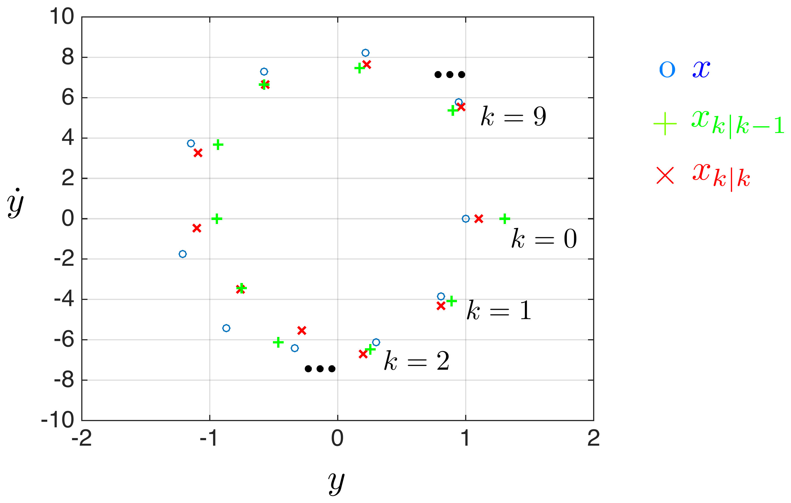
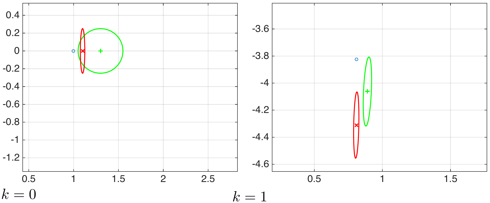
The panel below runs exactly the filter derived above, step by step, and lets you change the model and the two noise levels. Everything else is as in the worked example: \(C=[1\ \ 0]\), \(\Phi_{0|-1}=I\), the true initial state \(x_0=[1\ \ 0]^\intercal\), and a biased initial guess \(\hat x_{0|-1}=[\hat y_0\ \ 0]^\intercal\). With the default values you can read the numbers of the worked example straight off the panel: \(L_0=[0.9901\ \ 0]^\intercal\), \(\Phi_{0|0}=\text{diag}(0.0099,1)\), \(\Phi_{1|0}=\begin{bmatrix}0.0152&0.0461\\0.0461&1.0396\end{bmatrix}\), and so on. The measurements are generated afresh each time, so the estimates themselves will differ from the particular realization quoted above.
The left plot is the \((y,\dot y)\) phase plane, as in Fig. 13 and Fig. 14: the blue circles are the true state, the green \(+\) with its dashed ellipse is the prediction \((\hat x_{k|k-1},\Phi_{k|k-1})\), and the red \(\times\) with its solid ellipse is the correction \((\hat x_{k|k},\Phi_{k|k})\). Each Play tick advances half a stage, so you see the prediction first, then the measurement arriving as an orange stripe — only the position is measured, so a measurement constrains \(y\) and says nothing directly about \(\dot y\) — then the correction. The right plots show the two state components against time, with the \(\pm\sigma\) envelope of the corrected belief. Note that the two axes of the phase plane are scaled independently, so the ellipses appear stretched.
Worth trying:
- Watch the first few stages with the default values. The correction ellipse is always inside the prediction ellipse, and after the very first measurement it is extremely thin in the \(y\) direction and still one unit wide in \(\dot y\): a position sensor tells you nothing about velocity yet. By \(k=2\) the ellipse has tilted, because the model has coupled the two components, and velocity becomes observable through the dynamics.
- Change \(\sigma_n\) from \(0.1\) to \(1\) and back. A noisy sensor gives a small gain \(L_k\), so the correction barely moves the estimate and the filter leans on the model; a precise sensor gives \(L_k\) close to \([1\ \ \cdot]^\intercal\) and the estimate snaps onto each measurement. \(\sigma_w\) does the opposite: a large process noise means the model is untrustworthy, so the gain goes up.
- The covariances settle after about ten stages, whatever you choose. With the defaults they converge to \(\bar\Phi=\begin{bmatrix}0.0103&0.0301\\0.0301&0.5819\end{bmatrix}\) and \(\bar L=[0.5065\ \ 1.4857]^\intercal\), which is the stationary filter of the duality remark above. This happens before any measurement is used, so the gain could have been precomputed.
- Push \(\omega_n\) up towards \(30\) with \(\tau\) fixed at \(0.1\). There are then fewer than one samples per oscillation, the mass moves a long way between measurements, and no filter can keep up — a limit of the sampling, not of the estimator. Lowering \(\tau\) restores it.
The Kalman filter naturally splits into two steps. The prediction step
\[ \hat x_{k+1|k} = A\hat x_{k|k}+Bu_k, \qquad \Phi_{k+1|k} = A\Phi_{k|k}A^\intercal+W, \]
propagates the previous estimate forward in open loop, using only the model. The correction (or innovation/update) step
\[ \hat x_{k|k} = \hat x_{k|k-1} + \underbrace{L_k(y_k-C\hat x_{k|k-1})}_{\text{innovation}}, \qquad \Phi_{k|k} = \Phi_{k|k-1}-\Phi_{k|k-1}C^\intercal(C\Phi_{k|k-1}C^\intercal+V)^{-1}C\Phi_{k|k-1}, \]
folds in the new measurement. As illustrated in the mass-spring example above, the covariance shrinks in the correction step and (typically) grows again in the prediction step. Although this may seem counter-intuitive, the covariance matrices \(\Phi_{k|k-1}\), \(\Phi_{k|k}\) do not depend on the actual measurements or control input at all, and can therefore be computed entirely offline, before any data is observed.
The covariance recursion of the Kalman filter is dual to the Riccati recursion of the LQR problem of Unit 5. Substituting the correction step into the prediction step gives
\[ \Phi_{k+1|k} = A\Phi_{k|k-1}A^\intercal - A\Phi_{k|k-1}C^\intercal(C\Phi_{k|k-1}C^\intercal+V)^{-1}C\Phi_{k|k-1}A^\intercal+W \]
which coincides with the Riccati recursion of Unit 5 under the substitution \((A,B,Q,R)\to(A^\intercal,C^\intercal,W,V)\), \(S=0\). Consequently, exactly as \(P_k\to\bar P\) and \(K_k\to\bar K\) in the LQR problem, here \(\Phi_{k+1|k}\to\bar\Phi\) and \(L_k\to\bar L\) as \(k\to\infty\), with
\[ \bar\Phi = A\bar\Phi A^\intercal - A\bar\Phi C^\intercal(C\bar\Phi C^\intercal+V)^{-1}C\bar\Phi A^\intercal+W, \qquad \bar L = \bar\Phi C^\intercal(C\bar\Phi C^\intercal+V)^{-1}, \]
and \(A+\tilde LC\) is stable whenever \((A,C)\) is observable (less stringent sufficient conditions can be inferred, by duality, from the corresponding LQR stability conditions of Unit 5), where \(\tilde L=A\bar L\). The stationary estimator equations are then
\[ \hat x_{k+1|k} = A\hat x_{k|k} + Bu_k, \qquad \hat x_{k|k} = \hat x_{k|k-1}+\bar L(y_k-C\hat x_{k|k-1}). \]
3.2 Historical note
Rudolf E. Kálmán (1930-2016) had ideas on filtering that were initially met with vast skepticism – so much so that he was forced to publish his first results in a mechanical engineering venue, rather than in electrical or systems engineering. Kálmán had more success presenting his ideas while visiting Stanley F. Schmidt at the NASA Ames Research Center in 1960, which led to the use of Kálmán filters during the Apollo program, and subsequently in the Space Shuttle, in Navy submarines, and in unmanned aerospace vehicles and weapons such as cruise missiles (source: Wikipedia).
4 LQG design
Putting the separation principle to work, the infinite-horizon LQG controller is assembled from two independent Riccati-type recursions.
Given: \(x_{k+1}=Ax_k+Bu_k+w_k\), \(x_0\sim\mathcal{N}(\bar x_0,\bar\Phi_0)\), \(y_k=Cx_k+n_k\), \(n_k\sim\mathcal{N}(0,V)\), \(w_k\sim\mathcal{N}(0,W)\), and cost \(\lim_{T\to\infty}\frac{1}{T}\sum_{k=0}^{T-1}\mathbb{E}\big[\begin{bmatrix}x_k^\intercal & u_k^\intercal\end{bmatrix}\begin{bmatrix}Q&S\\S^\intercal&R\end{bmatrix}\begin{bmatrix}x_k\\u_k\end{bmatrix}\big]\).
Controller gains (algebraic Riccati equation of Unit 5):
\[ \bar P=A^\intercal \bar PA+Q-(S+A^\intercal \bar PB)(B^\intercal \bar PB+R)^{-1}(S^\intercal+B^\intercal \bar PA), \qquad \bar K=-(B^\intercal \bar PB+R)^{-1}(S^\intercal+B^\intercal \bar PA). \]
Observer gains (dual algebraic Riccati equation):
\[ \bar\Phi=A\bar\Phi A^\intercal-A\bar\Phi C^\intercal(C\bar\Phi C^\intercal+V)^{-1}C\bar\Phi A^\intercal+W, \qquad \bar L=\bar\Phi C^\intercal(C\bar\Phi C^\intercal+V)^{-1}. \]
LQG controller:
\[ \hat x_{k+1|k}=A\hat x_{k|k}+Bu_k, \qquad \hat x_{k|k}=\hat x_{k|k-1}+\bar L(y_k-C\hat x_{k|k-1}), \qquad u_k=\bar K\hat x_{k|k}. \]
A subtlety concerns timing: by convention \(u_k\) depends on \(y_k\), meaning that at instant \(k\) the sensor is read, the control is computed, and only then is the actuator updated. Since real controllers have computation delays, it is common in practice to instead use \(u_k=\bar K\hat x_{k|k-1}\), which can be computed entirely between time steps \(k\) and \(k+1\). In that case only the Luenberger observer form is needed,
\[ \hat x_{k+1|k} = A\hat x_{k|k-1}+Bu_k+\tilde L(y_k-C\hat x_{k|k-1}), \qquad u_k=\bar K\hat x_{k|k-1}, \qquad \tilde L=A\bar L. \]
(In MATLAB’s kalman.m, the first form corresponds to option 'current' and the second to 'delayed'.) Either way, the closed loop is stable because \(A+B\bar K\) and \(A+\tilde LC\) are each stable. The resulting average cost is
\[ \text{trace}(\bar PW)+\text{trace}(\bar X\bar\Phi), \qquad \bar X=A^\intercal \bar PB(R+B^\intercal \bar PB)^{-1}B^\intercal \bar PA, \]
obtained by dividing the finite-horizon cost by the horizon \(T\) and letting \(T\to\infty\).
4.1 Example: the inverted pendulum
Return to the inverted-pendulum-on-a-cart of Unit 5 (the balancing Segway is a familiar real-world instance of the same principle: keep an inverted pendulum upright by actuating its base).
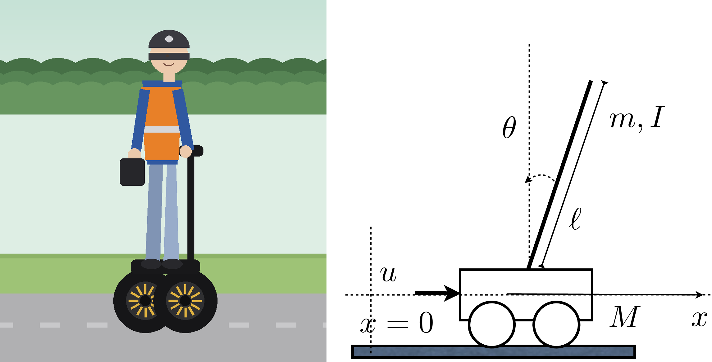
The linearized model is the same as in Unit 5,
\[ (I+m\ell^2)\ddot\theta-mg\ell\theta=m\ell\ddot x, \qquad (M+m)\ddot x+b\dot x-m\ell\ddot\theta=u, \]
with state-space form
\[ \frac{d}{dt}\begin{bmatrix}x\\\dot x\\\theta\\\dot\theta\end{bmatrix} = \begin{bmatrix}0&1&0&0\\0&-\frac{(I+m\ell^2)b}{q}&\frac{m^2g\ell^2}{q}&0\\0&0&0&1\\0&-\frac{m\ell b}{q}&\frac{mg\ell(M+m)}{q}&0\end{bmatrix}\begin{bmatrix}x\\\dot x\\\theta\\\dot\theta\end{bmatrix} + \begin{bmatrix}0\\\frac{I+m\ell^2}{q}\\0\\\frac{m\ell}{q}\end{bmatrix}u(t), \qquad q=(I+m\ell^2)(M+m)-m^2\ell^2, \]
(see [1, p. 32]), now with a single noisy position measurement
\[ y_k = \begin{bmatrix}1&0&0&0\end{bmatrix}\begin{bmatrix}x(k\tau)\\\dot x(k\tau)\\\theta(k\tau)\\\dot\theta(k\tau)\end{bmatrix} + n_k, \qquad n_k\sim\mathcal{N}(0,\sigma_n), \qquad \tau \text{ the sampling period}. \]
[1] Feedback Control of Dynamic Systems, Franklin, Powell, Emami-Naeini.
For \(Q=I\), \(S=0\), \(R=1\), \(\tau=0.1\), \(W=I\), \(V=1\), \(\sigma_n=0.0001\), and initial condition \(x_0=[1\ \ 0\ \ 0\ \ 0]^\intercal\), the closed-loop LQG response is shown below.
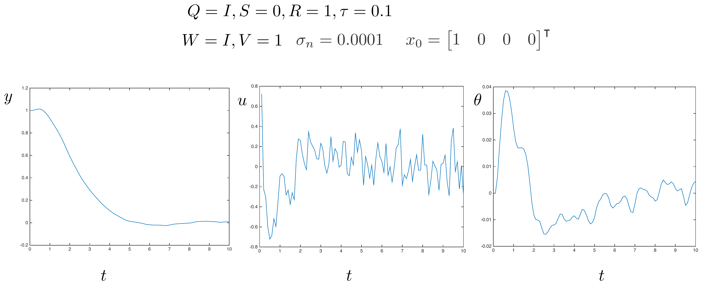
In practice, the noise and disturbance covariance matrices \(V\) and \(W\) are treated as tuning knobs for the state estimate – usually chosen diagonal, for simplicity. If the filter is too “nervous” (it reacts very fast, so the estimates are noisy), trust the sensors less and the model more, i.e. increase \(V\) and decrease \(W\). If it reacts too slowly (filtering out noise well, but adding delay to the control loop, which is generally undesirable), do the opposite: decrease \(V\) and increase \(W\).
This is the interactive example of Unit 5, now closed through an LQG controller instead of full state feedback. The plant, the parameters and the push buttons are the same (cart mass \(M=0.5\) kg, pendulum mass \(m=0.2\) kg, inertia \(I=0.006\ \text{kg}\!\cdot\!\text{m}^2\), length \(\ell=0.3\) m, friction \(b=0.1\) N·s/m, \(g=9.8\ \text{m/s}^2\), sampling \(\tau=0.02\) s), but the controller no longer sees the state. It sees only the noisy outputs, runs the stationary Kalman filter \(\hat x_{k|k}=\hat x_{k|k-1}+\bar L(y_k-C\hat x_{k|k-1})\), and applies \(u_k=\bar K\hat x_{k|k}\), with \(\bar K\) from the control Riccati equation and \(\bar L\) from its dual. You now have four design knobs: \(Q=qI\) and \(R\) for the controller, and \(W=wI\) and \(V=vI\) for the estimator.
The simulated world is noisy and fixed: an unmodelled force disturbance on the cart with standard deviation \(0.3\) N at every step, and sensor noise with standard deviation \(0.02\) m on the position and \(0.02\) rad on the angle. So the pendulum visibly shakes no matter how you tune — that is the price of closing the loop on noisy measurements, and the notes’ Fig. 17 shows the same thing. What the knobs change is how well the filter copes. The faint red cart and rod drawn behind the real one is the estimate \(\hat x_{k|k}\); the lower trace shows the true angle (black), the estimated angle (red) and the raw angle measurements (orange dots), so you can watch the filter pulling a usable signal out of the noise.
Things to try:
- Push the cart and watch the red ghost lag the blue cart for a moment before catching up: the push is an unmodelled disturbance, so the filter only learns about it through the measurements. Compare with Unit 5, where the controller knew the state exactly and the recovery was visibly crisper. This is the real cost of output feedback, and no choice of \(W\) and \(V\) removes it.
- Only the ratio \(W/V\) matters for \(\bar L\): halving both leaves the gain and the behaviour untouched. Check it on the readout.
- Raise \(V\) (trust the sensors less). \(\bar L\) shrinks, the red ghost becomes smooth but lags, and the measured estimation error grows. Raise \(W\) instead (trust the model less) and the opposite happens: \(\bar L\) grows, the estimate becomes jumpy, and more of the sensor noise is fed straight through into \(u\). This is exactly the tuning rule stated above the panel, and the measured error has a clear minimum in between — with \(q=R=1\) it sits near \(w=0.01\), \(v=1\), which is where the panel starts.
- Compare the two error figures in the readout. \(\sqrt{\bar\Phi_{k|k}}\) is what the filter believes its error is; the second is the error actually measured against the true state. At the default \(w=0.01\), \(v=1\) the filter believes \(0.33\) m and \(27^\circ\) while really achieving about \(0.009\) m and \(0.7^\circ\) — a deliberately conservative design. Set \(w\approx3\cdot10^{-4}\) and \(v\approx4\cdot10^{-4}\), which is roughly the truth about this world, and the two figures come together (\(0.015\) m, \(0.9^\circ\) believed against \(0.013\) m, \(0.8^\circ\) measured). Push \(v\) down to \(10^{-4}\) and the filter becomes over-confident instead, claiming \(0.5^\circ\) while delivering \(0.8^\circ\). \(\bar\Phi\) is only the true error covariance when \(W\) and \(V\) are honest.
- Finally, switch the sensor to cart position only, the measurement of Fig. 17, and the pendulum falls over within a few seconds whatever you do. This is not a bug and not bad tuning. With only the cart position measured, the transfer function from \(u\) to \(x\) has a zero in the right half plane at \(s=+4.95\) rad/s, which sits below the plant’s unstable pole at \(s=+5.57\) rad/s, and no linear controller can make such a loop robust: it can be stabilized on paper, as in Fig. 17, but it tolerates almost no disturbance. Adding the angle measurement removes the obstruction entirely, which is why a real Segway measures its tilt and not just how far it has travelled.
5 Summary
When the dynamic model is linear and the cost is quadratic, adding zero-mean, independent disturbances to the state changes nothing about the optimal policy – it is still the deterministic LQR gain \(K_k\) applied to the true state – a property called certainty equivalence; the only effect of the disturbances is an additive term in the expected optimal cost. When, in addition, the state is only partially observed through a noisy linear output, and every random quantity involved is Gaussian, the belief \(P_{x_k|I_k}\) remains Gaussian at every stage and is propagated by the Kalman filter, a recursive prediction/correction scheme for its mean and covariance. The separation principle then says that the optimal output-feedback controller is simply the LQR gain applied to the Kalman filter’s state estimate, LQG = LQR + LQE, with the estimator and controller designed independently via two dual Riccati-type recursions. This combination – illustrated here on the double integrator and the inverted pendulum – is the standard state-feedback-under- uncertainty design tool for linear systems, closing out Part II of the course.